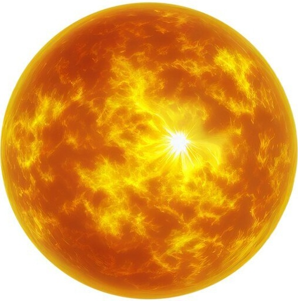
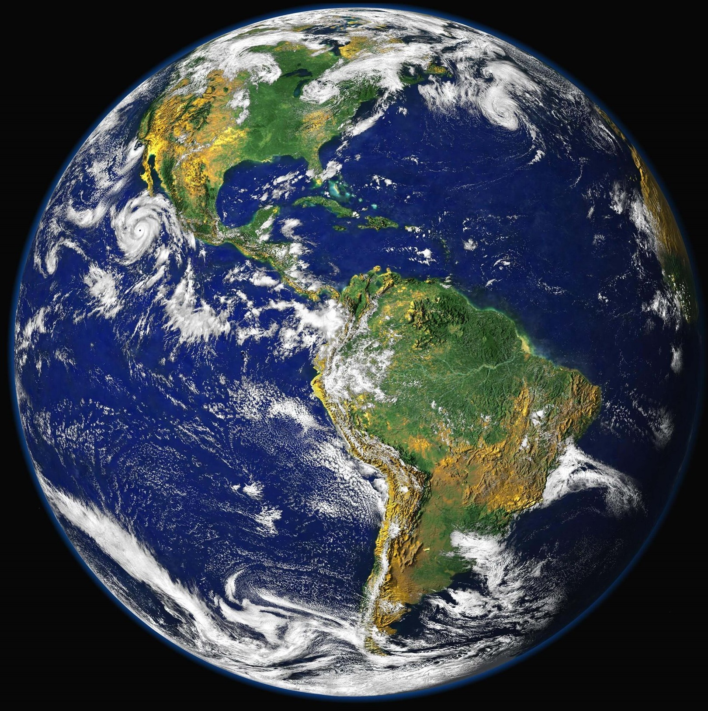

Vesmír je prostor, který se skládá z veškeré hmoty, energie a časoprostoru. Existuje zde mnoho hvězd, planet a galaxií. Zakřivení časoprostoru ovlivňují hmotná tělesa, pozorujeme ho jako gravitaci.
Nikdo neví, jak je velký, ale odhaduje se na 96 miliard světelných let. Pořád se rozpíná rycholstí 74 km/s/Mpc. Jak se vemír rozpíná, tím se všechny objekty v něm oddalují od sebe.


Nejčastější teorie vzniku vesmíru je teorie Velkého třesku. Vesmír je 13,8 miliardy let starý. Předtím nebyl časoprostor, tedy nebylo nic.
Mějme dvojčata, jedno z nich cestuje k sousední hvězdě. Když se vrátí, zjistí, že to druhé dvojče, které zůstalo na Zemi, je mladší, než on, protože se (s planetou Zemí) pohyboval vysokou rychlostí vzhledem k druhému ve vesmíru.
Souvisí s problematikou dilatace času v Einsteinově teorii relativity.
Rozpor mezi velkou pravděpodobností existence mimozemských civilizací a tím, že není žádný důkaz o kontaktu s nimi.
Vesmír je tmavý, ale jsou tam miliardy hvězd, které by měly vesmír osvětlovat.
Vlnové délky viditelného světla se prodlužují s rozpínáním vesmíru.
Když odcestuji do minulosti a zabiju dědečka, tak se nenarodím, tím pádem nemohu odcestovat do minulosti a zabít dědečka.
Dvě částice se mohou ovlivňovat na velmi velkou vzdálenost.
Byli tam.
Lidé ve vesmíruJe jich 11.
Planety a planetkySvítí.
HvězdyPadají.
KometyJsou černé a sají.
Černé díry